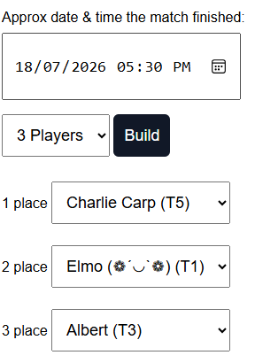

The leaderboard and all stats are located here: BagTag_Tracker
Once a challenge is complete, notify the FB chat of the outcome. We don’t need scores, what rules you played or if it was a flip of the coin. Something as simple as:
Charlie, Elmo, Albert
When an admin enters a match, it will look similar to the screenshot below. So as long as tag #’s are up-to-date, the system knows that Charlie (started with #T5 and) left with #T1, Elmo left with #T3 and Albert left with #T5:
We might ping the group occaisionally to get tags but I'd rather not. This is why I ask, if you’re going to play, please message the group because the data relies on you! Later in the year if you want specific user stats or your performance against another individual, I can probably help – but you need to do your part about submitting match results.
This will be worked out towards the end of the year once we have a pool of money to allocate. I endeavour to have multiple prizes and not just who held the #1 at the end. Check the stats page for possibilities 😄
Why is there a cost?
This comp is separate from NQDG League. To do prizes and cost of tags means there is additional overhead. Sorry.
Can I just play tags amongst my crew?
If you have a tag, you can be challenged by anyone. Play amongst your friends but if you have a desirable tag, expect a
call-out. “Squatting” on a tag isn’t in the spirit of bag tags and if you want that tag, earn it.
If I want a tag but don't want to to participate in challenges, what then?
Come see me and we can work something towards the end of the year.
*If you don’t pay for your tag then you are not in the running for any prizes*
If in doubt, send a message/talk to Todd. Likewise if you've got a stat or metric you'd like to see.